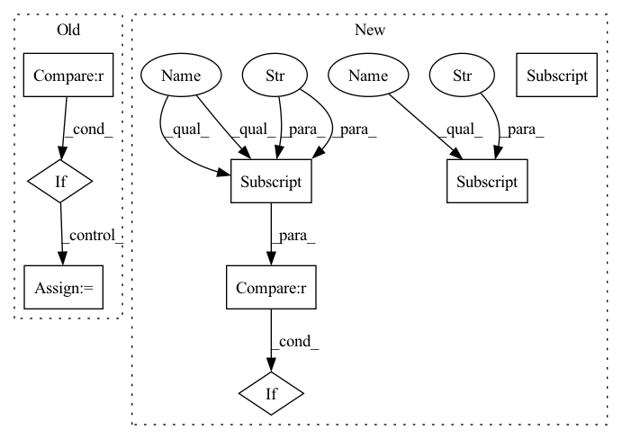

Pattern ID :167
Before Change
loss_mask=dict(
type="CrossEntropyLoss", use_mask=True, loss_weight=1.0)):
super(FCNMaskHead, self).__init__()
if upsample_method not in [None, "deconv", "nearest", "bilinear"] :
raise ValueError(
"Invalid upsample method {}, accepted methods "
"are "deconv", "nearest", "bilinear"".format(upsample_method))
self.num_convs = num_convs
// WARN: roi_feat_size is reserved and not used
self.roi_feat_size = _pair(roi_feat_size)
self.in_channels = in_channels
self.conv_kernel_size = conv_kernel_size
self.conv_out_channels = conv_out_channels
self.upsample_method = upsample_method
self.upsample_ratio = upsample_ratio
self.num_classes = num_classes
self.class_agnostic = class_agnostic
self.conv_cfg = conv_cfgAfter Change
type="CrossEntropyLoss", use_mask=True, loss_weight=1.0)):
super(FCNMaskHead, self).__init__()
self.upsample_cfg = upsample_cfg.copy()
if self.upsample_cfg["type"] not in [
None, "deconv", "nearest", "bilinear", "carafe"
]:
raise ValueError(
"Invalid upsample method {}, accepted methods "
"are "deconv", "nearest", "bilinear", "carafe"".format(
self.upsample_cfg["type"] ))
self.num_convs = num_convs
// WARN: roi_feat_size is reserved and not used
self.roi_feat_size = _pair(roi_feat_size)In pattern: SUPERPATTERN
Frequency: 4
Non-data size: 8
Instances Fragment ID: 670762
Project Name: shinya7y/universenet
Commit Name: b5431092505f7dcd7de616c8a79eba4d2532fbc8
Time: 2020-02-21
Author: 1155098160@link.cuhk.edu.hk
File Name: mmdet/models/mask_heads/fcn_mask_head.py
M Class Name: FCNMaskHead
N Class Name: FCNMaskHead
M Method Name: __init__(12)
N Method Name: __init__(13)
M Parent Class: nn.Module
N Parent Class: nn.Module
M File Name: mmdet/models/mask_heads/fcn_mask_head.py
N File Name: mmdet/models/mask_heads/fcn_mask_head.py
M Start Line: 23
M End Line: 76
N Start Line: 26
N End Line: 90
Before Change
self.gcb = gcb
self.with_gcb = gcb is not None
self.gen_attention = gen_attention
self.with_gen_attention = gen_attention is not None
if self.style == "pytorch":
self.conv1_stride = 1
self.conv2_stride = stride
else:
self.conv1_stride = stride
self.conv2_stride = 1
self.norm1_name, norm1 = build_norm_layer(norm_cfg, planes, postfix=1)
self.norm2_name, norm2 = build_norm_layer(norm_cfg, planes, postfix=2)
self.norm3_name, norm3 = build_norm_layer(
norm_cfg, planes * self.expansion, postfix=3)
self.conv1 = build_conv_layer(
conv_cfg,
inplanes,
planes,
kernel_size=1,
stride=self.conv1_stride,
bias=False)
self.add_module(self.norm1_name, norm1)
fallback_on_stride = False
if self.with_dcn:
fallback_on_stride = dcn.pop("fallback_on_stride", False)
if not self.with_dcn or fallback_on_stride:
self.conv2 = build_conv_layer(
conv_cfg,
planes,
planes,
kernel_size=3,
stride=self.conv2_stride,
padding=dilation,
dilation=dilation,
bias=False)
else:
assert self.conv_cfg is None, "conv_cfg must be None for DCN"
self.conv2 = build_conv_layer(
dcn,
planes,
planes,
kernel_size=3,
stride=self.conv2_stride,
padding=dilation,
dilation=dilation,
bias=False)
self.add_module(self.norm2_name, norm2)
self.conv3 = build_conv_layer(
conv_cfg,
planes,
planes * self.expansion,
kernel_size=1,
bias=False)
self.add_module(self.norm3_name, norm3)
self.relu = nn.ReLU(inplace=True)
self.downsample = downsample
if self.with_gcb:
gcb_inplanes = planes * self.expansion
self.context_block = ContextBlock(inplanes=gcb_inplanes, **gcb)
// gen_attention
if self.with_gen_attention:
self.gen_attention_block = GeneralizedAttention(
planes, **gen_attention)
@propertyAfter Change
if self.with_plugins:
// collect plugins for conv1/conv2/conv3
self.after_conv1_plugins = [
plugin["cfg"] for plugin in plugins
if plugin["position"] == "after_conv1"
]
self.after_conv2_plugins = [
plugin["cfg"] for plugin in plugins
if plugin["position"] == "after_conv2" Fragment ID: 670763
Project Name: shinya7y/universenet
Commit Name: 1cccda2d0bf06094229075828030a8228d71fd28
Time: 2020-03-31
Author: xvjiarui0826@gmail.com
File Name: mmdet/models/backbones/resnet.py
M Class Name: Bottleneck
N Class Name: Bottleneck
M Method Name: __init__(12)
N Method Name: __init__(13)
M Parent Class: nn.Module
N Parent Class: nn.Module
M File Name: mmdet/models/backbones/resnet.py
N File Name: mmdet/models/backbones/resnet.py
M Start Line: 100
M End Line: 192
N Start Line: 105
N End Line: 200
Before Change
loss_mask=dict(
type="CrossEntropyLoss", use_mask=True, loss_weight=1.0)):
super(FCNMaskHead, self).__init__()
if upsample_method not in [None, "deconv", "nearest", "bilinear"] :
raise ValueError(
"Invalid upsample method {}, accepted methods "
"are "deconv", "nearest", "bilinear"".format(upsample_method))
self.num_convs = num_convs
// WARN: roi_feat_size is reserved and not used
self.roi_feat_size = _pair(roi_feat_size)
self.in_channels = in_channels
self.conv_kernel_size = conv_kernel_size
self.conv_out_channels = conv_out_channels
self.upsample_method = upsample_method
self.upsample_ratio = upsample_ratio
self.num_classes = num_classes
self.class_agnostic = class_agnostic
self.conv_cfg = conv_cfg
self.norm_cfg = norm_cfg
self.fp16_enabled = False
self.loss_mask = build_loss(loss_mask)
self.convs = nn.ModuleList()
for i in range(self.num_convs):
in_channels = (
self.in_channels if i == 0 else self.conv_out_channels)
padding = (self.conv_kernel_size - 1) // 2
self.convs.append(
ConvModule(
in_channels,
self.conv_out_channels,
self.conv_kernel_size,
padding=padding,
conv_cfg=conv_cfg,
norm_cfg=norm_cfg))
upsample_in_channels = (
self.conv_out_channels if self.num_convs > 0 else in_channels)
if self.upsample_method is None:
self.upsample = None
elif self.upsample_method == "deconv":
self.upsample = nn.ConvTranspose2d(
upsample_in_channels,
self.conv_out_channels,
self.upsample_ratio,After Change
loss_mask=dict(
type="CrossEntropyLoss", use_mask=True, loss_weight=1.0)):
super(FCNMaskHead, self).__init__()
self.upsample_cfg = upsample_cfg.copy()
if self.upsample_cfg["type"] not in [
None, "deconv", "nearest", "bilinear", "carafe"
]:
raise ValueError(
"Invalid upsample method {}, accepted methods "
"are "deconv", "nearest", "bilinear", "carafe"".format(
self.upsample_cfg["type"] ))
self.num_convs = num_convs
// WARN: roi_feat_size is reserved and not used
self.roi_feat_size = _pair(roi_feat_size) Fragment ID: 670761
Project Name: saic-vul/iterdet
Commit Name: b5431092505f7dcd7de616c8a79eba4d2532fbc8
Time: 2020-02-21
Author: 1155098160@link.cuhk.edu.hk
File Name: mmdet/models/mask_heads/fcn_mask_head.py
M Class Name: FCNMaskHead
N Class Name: FCNMaskHead
M Method Name: __init__(12)
N Method Name: __init__(13)
M Parent Class: nn.Module
N Parent Class: nn.Module
M File Name: mmdet/models/mask_heads/fcn_mask_head.py
N File Name: mmdet/models/mask_heads/fcn_mask_head.py
M Start Line: 23
M End Line: 76
N Start Line: 26
N End Line: 90